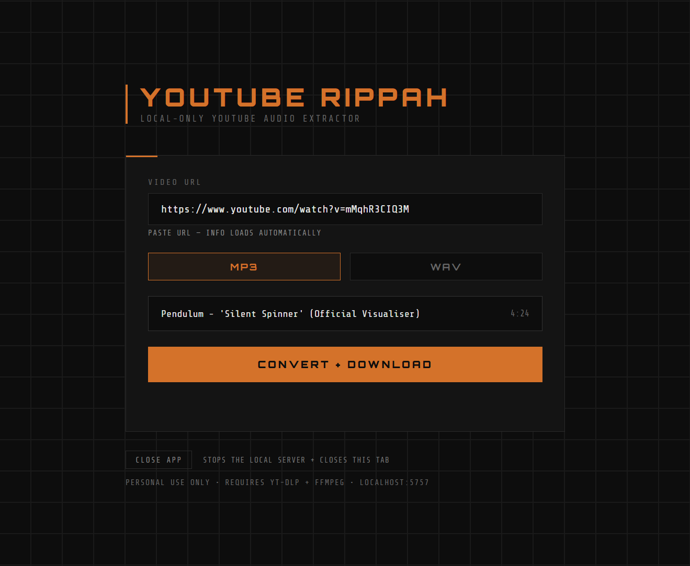

Youtube RIPPAH
Local only · Python + Flask · Free
What it does
Paste a YouTube URL, pick MP3 or WAV, get a file. Runs in your browser against a local Flask server — nothing touches the cloud.
- Paste any YouTube URL
- MP3 output
- WAV output
- Instant download
- No account needed
- No cloud, no tracking
- Runs on localhost
- Simple dark UI
How to use
Prerequisites — one-time setup
- 1Install Python 3 from python.org
- 2In a terminal, run
pip install yt-dlp - 3Run
winget install ffmpeg(or install manually and add to PATH) - 4Clone or download the repo from GitHub
- 5Put the files somewhere - you'll open terminal from there next.
Start the app
Two options: run from terminal each time, or create a Windows shortcut.
- ATerminal:
cdinto the repo folder, runpython index.py, then openhttp://localhost:5757 - BWindows (no console): create a shortcut targeting
powershell.exe -WindowStyle Hidden -ExecutionPolicy Bypass -File launch.ps1— browser opens automatically, no console visible
Convert a video
- 1Paste a YouTube URL — title and duration load automatically
- 2Pick MP3 or WAV
- 3Click Convert + Download — file saves to your browser's default download folder
Constraints: Local only — server must be running on your machine · Not a hosted web app · Windows launcher included; Mac/Linux run via terminal · Temp files auto-deleted after 10 min
